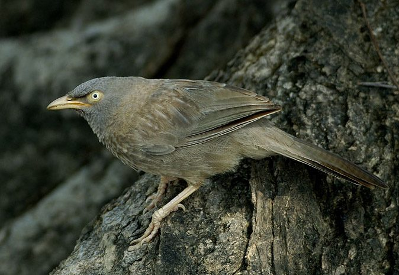

सातभाईJungle Babbler
Turdoides striata · Leiothrichidae · BRD-0035

- Scientific name
- Turdoides striata (Dumont, 1823)
- Family
- Leiothrichidae
- Hindi
- सातभाई
- Status here
- native
- IUCN
- LC
When to look कब देखें
Present all year.
सातभाई / Jungle Babbler
Turdoides striata (Dumont, 1823) — Leiothrichidae
सातभाई (जंगल बैबलर) — पूर्वी उत्तर प्रदेश के ग्रामीण इलाकों, बागों, खेतों और झाड़ियों में पाया जाने वाला एक अत्यंत सामाजिक और शोर मचाने वाला निवासी पक्षी है। यह हमेशा 6 से 10 पक्षियों के समूहों में रहता है, जिसके कारण इसे स्थानीय भाषा में "सातभाई" (सात भाई) या "सात बहनें" (Seven Sisters) कहा जाता है। यह पक्षी मटमैले-भूरे (earthy brown) रंग का होता है, जिसके सिर का रंग थोड़ा पीला-धूसर होता है। इसकी सबसे बड़ी पहचान इसकी पीली चोंच (yellow bill) और इसकी डरावनी पीली आँखें (staring yellow eyes) हैं। यह समूह में रहकर जमीन पर सूखी पत्तियों को उलट-पुलटकर कीड़े ढूंढता है और बिल्ली या बाज जैसे शिकारियों को देखते ही पूरे समूह को सचेत करने के लिए तेज़ कर्कश आवाज़ें निकालता है।
Quick Identification त्वरित पहचान
| Feature | Description |
|---|---|
| Size | Medium-sized bird (23–26 cm total length); slightly smaller than a Myna |
| Colouration | Earthy grey-brown plumage; pale whitish head and throat; tail slightly barred |
| Eyes & Bill | Yellowish-white bill; prominent, staring pale-yellow or cream eyes |
| Sociality | Highly gregarious; always seen in groups of 6–10 feeding on the ground |
| Behaviour | Constantly hops, turns over dry leaves, and churrs; very noisy |
| Sentinel habit | One or two birds keep watch from branches while the rest feed on the ground |
Field tip: Look in garden hedges or under mango trees. If you see a group of pale-eyed brown birds hopping on the ground, turning over dry leaves, and calling to each other in a series of nasal churrs, they are Jungle Babblers.
Morphology आकारिकी
Biometrics (typical measurements in the northern Indian plains):
| Measurement | Range |
|---|---|
| Total length | 230–260 mm |
| Wing (flattened chord) | 100–110 mm |
| Tail | 100–115 mm |
| Tarsus | 32–36 mm |
| Bill (culmen from base) | 20–24 mm |
| Weight | 60–80 g |
Plumage: The upperparts are greyish-brown, with fine dark shaft-streaks on the crown and back. The throat and upper breast are pale whitish-grey, with a faint scaly pattern. The lower underparts are warm buff-brown. The tail is long, slightly graduated, and shows fine dark transverse bars under close inspection.
Bare parts: The curved, short bill is yellowish-pink or pale yellow. The irises are cream-white to pale yellow, giving the bird a staring, angry expression. The legs and feet are pale yellow.
Vocalisations
Jungle Babblers are highly vocal, maintaining contact with constant calls.
- Contact Call: A harsh, nasal, churring chatter: churrr-churrr or ke-ke-ke-ke-chur, given by members of the group to indicate their position.
- Alarm / Mobbing Call: A loud, high-pitched, rapid screaming chatter: screee-screee-screee, which mobilizes the entire group and neighboring birds to mob cats, snakes, or mongooses.
Ecological Role पारिस्थितिक भूमिका
Terrestrial insectivore and sentinel.
- Leaf-litter cleanup: By turning over fallen leaves, they catch beetles, crickets, and spiders that hide in dark places, preventing insect outbreaks.
- Sentinel warning system: Their early warning system protects many other garden birds, including doves and bulbuls, which forage nearby and heed the babbler alarm calls.
- Cooperative helper: Older offspring help the parents feed the new chicks, showing a highly evolved altruistic social system.
Life Cycle / Phenology जीवन चक्र
- Breeding season: March to September, peaking during the early monsoon.
- Nesting: They build a loose, cup-shaped nest of twigs, roots, and dry grass.
- Cooperative breeding: The breeding pair is supported by 3 to 5 "helpers" (usually their offspring from previous seasons) who assist in nest building, defense, and feeding the chicks.
- Clutch size: 3 to 4 beautiful turquoise-blue eggs.
- Incubation: 13–15 days, shared by the breeding pair and helpers.
- Fledging: Nestlings are fed a rich protein diet of insects by all group members. Chicks leave the nest in 12–14 days.
Host Plants or Prey आहार
Primary food items:
- Insects: Grasshoppers, crickets, termites, caterpillars, ants, and beetles.
- Other invertebrates: Spiders, centipedes, and earthworms.
- Vegetative food: Occasional ripe fruits, nectar of Semal (Bombax ceiba) and Palash (Butea monosperma) flowers, and kitchen scraps near homes.
Predators / Natural Enemies शत्रु
- Raptors: Shikras (Accipiter badius) are their primary aerial predators.
- Carnivores: Domestic cats and Small Indian Mongooses (Herpestes edwardsii) stalk them while they feed on the ground.
- Parasites: Their nests are frequently parasitized by the Pied Cuckoo (Clamator jacobinus) and the Common Hawk-Cuckoo (Hierococcyx varius).
Agricultural / Human Relevance कृषि प्रासंगिकता
Useful agricultural ally. In Basti orchards, they are helpful as they actively clean up leaf litter pests, consuming caterpillars and beetle larvae beneath fruit trees.
The local name "सातभाई" (seven brothers) or "गंगा बभनी" (Ganga Brahmin) is deeply ingrained in eastern UP folklore, symbolizing brotherhood and constant chatter. In village culture, their noisy chattering is often compared to a busy market or a family council.
Expected Locally स्थानीय रूप से अपेक्षित
Not a field record. Written from published accounts for eastern Uttar Pradesh. No confirmed local sighting yet — if you have seen it, that is what the atlas needs.
अभी तक स्थानीय पुष्टि नहीं। यह विवरण प्रकाशित स्रोतों से है, किसी अवलोकन से नहीं।
Abundant in all village groves, mango orchards, and domestic gardens in Basti and Ayodhya. They are almost never seen alone. If one bird flies across a village lane, the remaining 5 to 7 birds will follow it one by one, glissando-like, uttering low churrs. They frequently feed in the same leafy litter under tamarind trees alongside Common Mynas.
Distribution वितरण
Global range: Endemic to the Indian Subcontinent (India, Pakistan, Nepal, Bangladesh).
In India: Widespread in plains and low hills throughout the country.
In Uttar Pradesh: Abundant resident across all rural and urban areas.
In Basti district / eastern UP: Extremely common in all orchards, farms, and suburban house gardens.
Research Questions शोध प्रश्न
Anyone can investigate these | कोई भी इन प्रश्नों की जाँच कर सकता है
- How many seconds does a sentinel babbler stay on its perch before being replaced by another member? — Track sentinel changes in a foraging group.
- Do Jungle Babblers in villages have smaller group sizes than those in large mango orchards? — Count and compare group sizes in different habitats.
- How do babbler groups react to Pied Cuckoo calls compared to Shikra calls? — Record responses to different playbacks.
- Does the feeding rate of individuals increase when the group size is larger? / क्या समूह का आकार बड़ा होने पर व्यक्तिगत रूप से भोजन करने की दर बढ़ जाती है? — Record foraging pecks per minute.
- How do they divide the task of feeding chicks between parents and helpers? / माता-पिता और सहायकों के बीच चूजों को खाना खिलाने के काम का बँटवारा कैसे होता है? — Monitor active nests.
Similar Species मिलती-जुलती प्रजातियाँ
| Species | Key Difference | हिंदी |
|---|---|---|
| Large Grey Babbler (Turdoides malcolmi) | Larger; outer tail feathers are white (prominent in flight); pale forehead; prefers dry habitats | बड़ा धूसर बैबलर — पूँछ के बाहरी पंख सफेद |
| Common Babbler (Turdoides caudata) | Smaller; heavily streaked upperparts; slender bill; prefers dry scrub, rare in Basti orchards | साधारण बैबलर — पीठ पर गहरी लकीरें |
| Yellow-billed Babbler (Turdoides affinis) | Pale grey crown (cap-like); yellow bill and eyes; endemic to southern India (absent in UP) | यूरिकुला — सिर पर सफेद टोपी, दक्षिण भारत |
Field rule: Earthy grey-brown plumage, yellowish bill, staring pale-yellow eyes, and an obligate group size of 6–10 birds foraging on the ground.
Taxonomy & Classification वर्गीकरण
Original description. Charles Dumont de Sainte Croix described the Jungle Babbler as Crateropus striatus in 1823 in the Dictionnaire des Sciences Naturelles (Vol. 29, p. 268). The type locality was Bengal. The genus name Turdoides was introduced by T. Forster in 1895, meaning "thrush-like." The specific name striata is Latin for "streaked," referencing the faint shaft-streaks on its back.
Subspecies. Five subspecies are recognized. The subspecies found in northern and eastern India is:
| Subspecies | Authority | Range | Notes |
|---|---|---|---|
| T. s. orientalis | (Jerdon, 1845) | Northern and Central India | UP subspecies; nominate form T. s. striata is restricted to southern/western India |
Family and order placement. Placed in the order Passeriformes, family Leiothrichidae (laughingthrushes and allies).
Phylogenetic notes. Turdoides striata forms a species complex with Turdoides affinis (Yellow-billed Babbler).
IUCN status rationale. Listed as Least Concern (LC) due to its large range, stable population, and tolerance to human-altered agricultural habitats.
Photo Gallery फोटो गैलरी
References संदर्भ
- Dumont, C. (1823). Dictionnaire des Sciences Naturelles. Tome 29. F.G. Levrault, Paris, p. 268. [original description]
- Ali, S. & Ripley, S. D. (1999). Handbook of the Birds of India and Pakistan. Vol. 6. Oxford University Press, New Delhi.
- Grimmett, R., Inskipp, C. & Inskipp, T. (2011). Birds of the Indian Subcontinent. 2nd ed. Christopher Helm, London.
- Gaston, A. J. (1977). Social behaviour within groups of Jungle Babblers Turdoides striatus. Animal Behaviour, 25(4), 828-848.
- BirdLife International (2024). Turdoides striata. IUCN Red List of Threatened Species. Ver. 2024.
- GBIF Occurrence Data — Turdoides striata, Uttar Pradesh (2010–2025).
Source file: species/fauna/birds/jungle_babbler.md